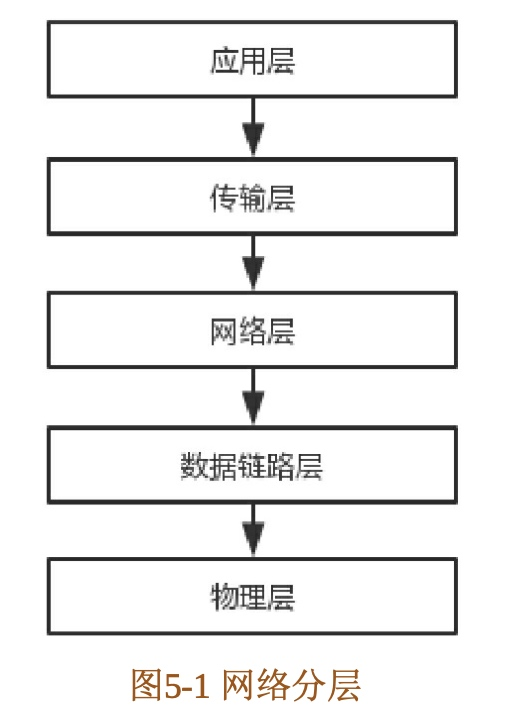
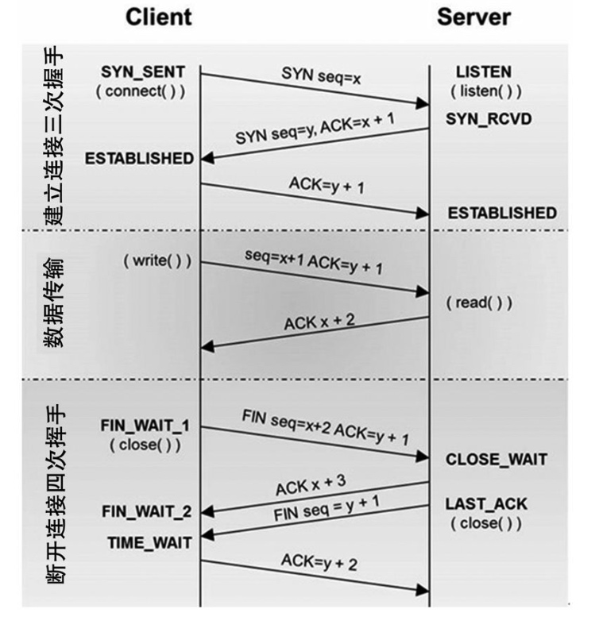
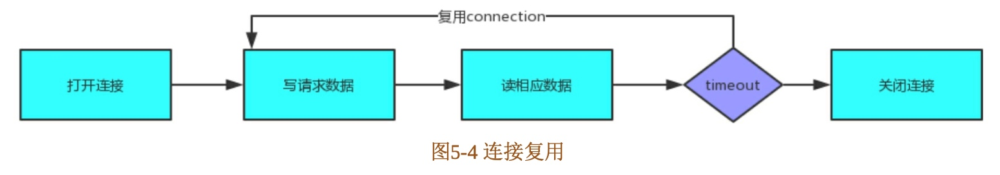
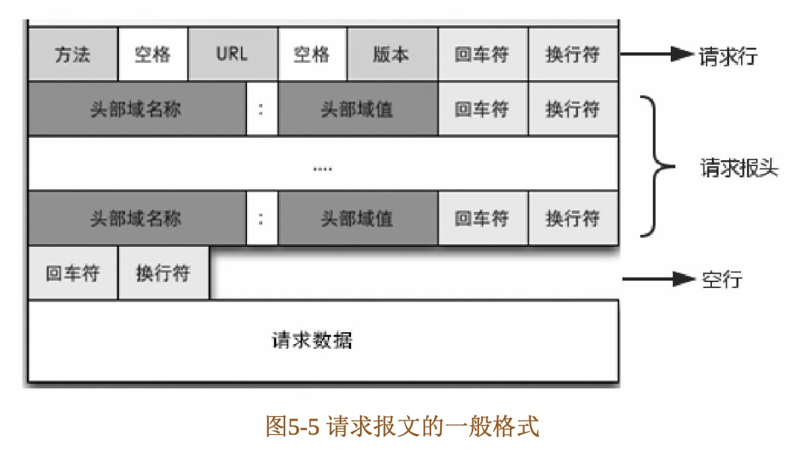
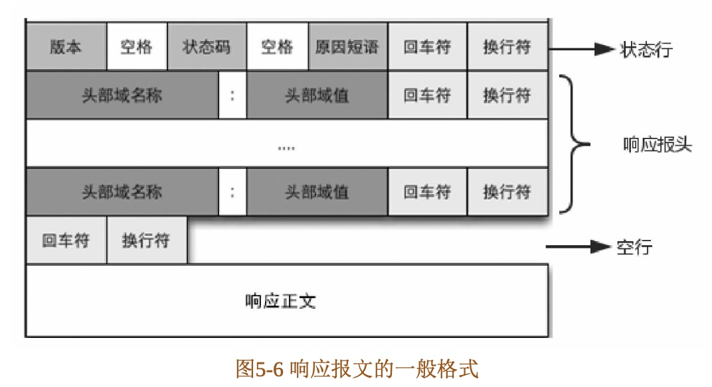
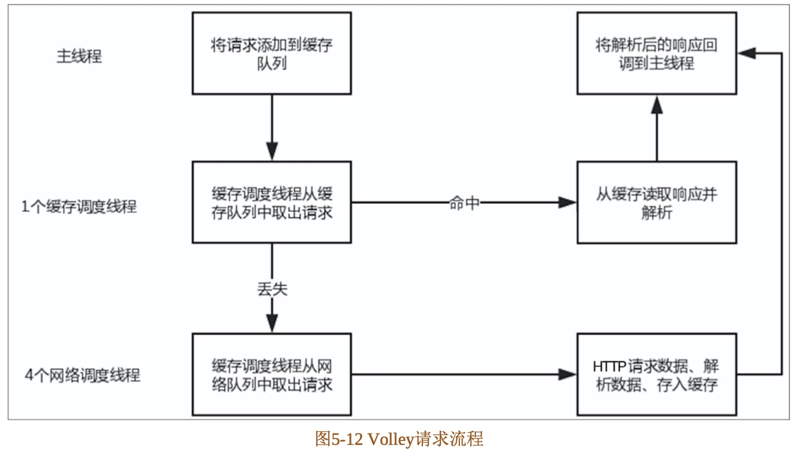
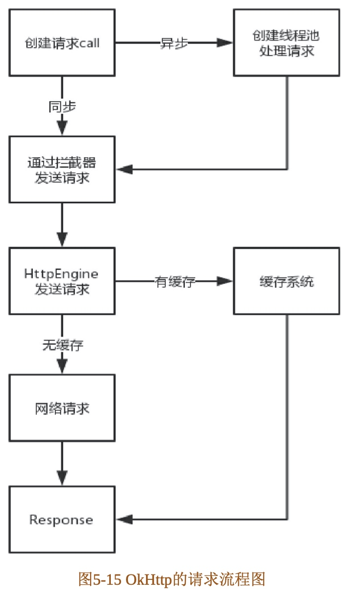

0 Android进阶之光-目录
01 Android新特性
02 Material Design
03 View体系与自定义View
04 多线程编程
05 网络编程与网络框架
06 设计模式
07 事件总线
08 函数响应式编程
09 注入与依赖注入框架
10 应用架构设计
11 系统架构与MediaPlayer框架

05 网络编程与网络框架
5.1 网络分层
网络分层就是将网络节点所要完成的数据的发送或转发、打包或拆包，以及控制信息的加载或拆出等 工作，分别由不同的硬件和软件模块来完成。这样可以将通信和网络互联这一复杂的问题变得较为简单。 网络分层有不同的模型，有的模型分7层，有的模型分5层。这里介绍分5层的，因为它更好理解。网络分层 的每一层都是为了完成一种功能而设的。为了实现这些功能，就需要遵守共同的规则，这个规则叫作“协议”。

如图5-1所示，网络分层从上到下分别是应用层、传输层、网络层、数据链路层和物理层。越靠下的层越接近硬件。接下来我们从下而上来分别了解这些分层。
- 物理层
该层负责比特流在节点间的传输，即负责物理传输。该层的协议既与链路有关，也与传输介质有关。 其通俗来讲就是把计算机连接起来的物理手段。 - 数据链路层
该层控制网络层与物理层之间的通信，其主要功能是如何在不可靠的物理线路上进行数据的可靠传递。为了保证传输，从网络层接收到的数据被分割成特定的可被物理层传输的帧。帧是用来移动数据的结 构包，它不仅包括原始数据，还包括发送方和接收方的物理地址以及纠错和控制信息。其中的地址确定了 帧将发送到何处，而纠错和控制信息则确保帧无差错到达。如果在传送数据时，接收点检测到所传数据中 有差错，就要通知发送方重发这一帧。 - 网络层
该层决定如何将数据从发送方路由到接收方。网络层通过综合考虑发送优先权、网络拥塞程度、服务质量以及可选路由的花费来决定从一个网络中的节点 A 到另一个网络中节点 B 的最佳路径。 - 传输层
该层为两台主机上的应用程序提供端到端的通信。相比之下，网络层的功能是建立主机到主机的通 信。传输层有两个传输协议:TCP(传输控制协议)和UDP(用户数据报协议)。其中，TCP是一个可靠的 面向连接的协议，UDP是不可靠的或者说无连接的协议。 - 应用层
应用程序收到传输层的数据后，接下来就要进行解读。解读必须事先规定好格式，而应用层就是规定 应用程序的数据格式的。它的主要协议有HTTP、FTP、Telnet、SMTP、POP3等。
5.2 TCP的三次握手与四次挥手
通常我们进行HTTP连接网络的时候会进行TCP的三次握手，然后传输数据，之后再释放连接。
TCP三次握手的过程如下。
- 第一次握手：建立连接。客户端发送连接请求报文段，将SYN设置为1、Sequence Number (seq)为x;接下来客户端进入SYN_SENT状态，等待服务端的确认。
- 第二次握手：服务器收到客户端的SYN报文段，对SYN报文段进行确认，设置AcknowledgmentNumber (ACK)为x+1 (seq+1) ;同时自己还要发送SYN请求信息，将SYN设置为1、seq为y。 服务端将上述所有信息放到SYN+ACK报文段中，一并发送给客户端，此时服务端进入SYN_RCVD状态。
- 第三次握手：客户端收到服务端的SYN+ACK报文段;然后将ACK设置为y+1，向服务端发送ACK报文段，这个报文段发送完毕后，客户端和服务端都进入ESTABLISHED (TCP连 接成功)状态，完成TCP的三次握手。
当客户端和服务端通过三次握手建立了TCP连接以后，当数据传送完毕，断开连接时就需要进行TCP的四次挥手。其四次挥手如下所示。
- 第一次挥手：客户端设置seq和ACK, 向服务端发送一个FIN报文段。此时，客户端进入FIN_WAIT_1状态，表示客户端没有数据要发送给服务端了。
- 第二次挥手：服务端收到了客户端发送的FIN报文段，向客户端回了一个ACK报文段。
- 第三次挥手：服务端向客户端发送FIN报文段，请求关闭连接，同时服务端进入LAST_ACK状态。
- 第四次挥手：客户端收到服务端发送的FIN报文段，向服务端发送ACK报文段，然后客户端进入TIME_WAIT状态。服务端收到客户端的ACK报文段以后，就关闭连接。此时，客户端等待2MSL (最大报文段生存时间)后依然没有收到回复，则说明服务端已正常关闭，这样客户端也可以关闭连接了。

如果有大量的连接，每次在连接、关闭时都要经历三次握手、四次挥手，这很显然会造成性能低下。 因此，HTTP有一种叫作keepalive connections的机制，它可以在传输数据后仍然保持连接，当客户端需要再次获取数据时，直接使用刚刚空闲下来的连接而无须再次握手。

5.3 HTTP协议原理
5.3.1 HTTP简介
HTTP 是一个属于应用层的面向对象的协议，由于其简捷、快速的方式，适用于分布式超媒体信息系统。
1.HTTP的历史版本
- HTTP 0.9：1991年发布的第一个版本，只有一个命令GET，服务器只能回应HTML格式的字符串。
- HTTP 1.0：1996年发布的版本，内容量大大增加。除了GET命令外，还引入了POST命令和HEAD命 令。HTTP请求和回应的格式除了数据部分，每次通信都必须包括头信息，用来描述一些元数据。
- HTTP 1.1：1997发布的版本，进一步完善了HTTP协议，直到现在还是最流行的版本。
- SPDY协议：2009年谷歌为了解决 HTTP 1.1效率不高的问题而自行研发的协议。
- HTTP 2：2015年新发布的版本，SPDY 协议的主要特性也在此版本中。
2.HTTP协议的主要特点
- 支持C/S(客户/服务器)模式。
- 简单快速：客户向服务器请求服务时，只需传送请求方法和路径。请求方法常用的有GET、HEAD、 POST，每种方法规定了客户与服务器联系的类型不同。由于 HTTP 协议简单，使得HTTP服务器的程序规模小，因而通信速度很快。
- 灵活：HTTP允许传输任意类型的数据对象。正在传输的类型由Content-Type加以标记。
- 无连接：无连接的含义是限制每次连接只处理一个请求。服务器处理完客户的请求，并收到客户的应答后，即断开连接。采用这种方式可以节省传输时间。
- 无状态：HTTP协议是无状态协议，无状态是指协议对于事务处理没有记忆能力。缺少状态意味着如 果后续处理需要前面的信息，则它必须重传，这样可能导致每次连接传送的数据量增大;而另一方面，在服务器不需要先前信息时它的应答速度就较快。
HTTP URL的格式如下所示：http://host[":"port][abs_path]
- http表示要通过HTTP协议来定位网络资源;
- host表示合法的Internet主机域名或者IP地址;
- port指定一个 端口号，为空则使用默认端口80;
- abs_path指定请求资源的URI(Web上任意的可用资源)。
HTTP有两种报 文，分别是请求报文和响应报文，下面先来查看请求报文。
5.3.2 HTTP请求报文
HTTP 报文是面向文本的，报文中的每一个字段都是一些ASCII码串，各个字段的长度是不确定的。一 般一个HTTP请求报文由请求行、请求报头、空行和请求数据4个部分组成。

请求行
请求行由请求方法、URL字段和HTTP协议的版本组成，格式如下:
Method Request-URI HTTP-Version CRLF
其中 Method表示请求方法；Request-URI是一个统一资源标识符；HTTP-Version表示请求的HTTP协议版本；CRLF表示回车和换行(除了作为结尾的CRLF外，不允许出现单独的CR或LF字符)。
HTTP请求方法有8种，分别是GET、POST、HEAD、PUT、DELETE、TRACE、CONNECT、 OPTIONS。对于移动开发最常用的就是GET和POST了。- GET:请求获取Request-URI所标识的资源。
- POST:在Request-URI所标识的资源后附加新的数据。
- HEAD:请求获取由Request-URI所标识的资源的响应消息报头。
- PUT:请求服务器存储一个资源，并用Request-URI作为其标识。
- DELETE:请求服务器删除Request-URI所标识的资源。
- TRACE:请求服务器回送收到的请求信息，主要用于测试或诊断。
- CONNECT:HTTP 1.1协议中预留给能够将连接改为管道方式的代理服务器。
- OPTIONS:请求查询服务器的性能，或者查询与资源相关的选项和需求。
例如，访问我的CSDN博客地址的请求行:
GET http://blog.csdn.net/itachi85 HTTP/1.1
请求报头
在请求行之后会有0个或者多个请求报头，每个请求报头都包含一个名字和一个值，它们之间用英文冒 号“:”分割。关于请求报头，我们会在后面做统一解释。请求数据
请求数据不在GET方法中使用，而在POST方法中使用。POST方法适用于需要客户填写表单的场合，与请求数据相关的最常用的请求报头是Content-Type和Content-Length。
5.3.3 HTTP响应报文
响应报文的一般格式：

HTTP 的响应报文由状态行、响应报头、空行、响应正文组成。响应正文是服务器返回的资源的内容。我们先来看看状态行。
状态行格式如下所示:
HTTP-Version Status-Code Reason-Phrase CRLF
HTTP-Version表示服务器HTTP协议的版本;Status-Code表示服务器发回的响应状态码;Reason- Phrase表示状态码的文本描述。状态码由3位数字组成，第一个数字定义了响应的类别，且有以下5种可能取值。
- 100~199:指示信息，收到请求，需要请求者继续执行操作。 * 200~299:请求成功，请求已被成功接收并处理。
- 300~399:重定向，要完成请求必须进行更进一步的操作。
- 400~499:客户端错误，请求有语法错误或请求无法实现。
- 500~599:服务器错误，服务器不能实现合法的请求。
常见的状态码如下。
- 200 OK:客户端请求成功。
- 400 Bad Request:客户端请求有语法错误，服务器无法理解。
- 401 Unauthorized:请求未经授权，这个状态码必须和WWW-Authenticate报头域一起使用。
- 403 Forbidden:服务器收到请求，但是拒绝提供服务。
- 500 Internal Server Error:服务器内部错误，无法完成请求。
- 503 Server Unavailable:服务器当前不能处理客户端的请求，一段时间后可能恢复正常。
5.3.4 HTTP的消息报头
消息报头分为通用报头、请求报头、响应报头、实体报头等。消息报头由键值对组成，每行一对，关键字和值用英文冒号“:”分隔。
- 通用报头
它既可以出现在请求报头，也可以出现在响应报头中，如下所示。- Date:表示消息产生的日期和时间。
- Connection:允许发送指定连接的选项。例如指定连接是连续的;或者指定“close”选项，通知服务器，在响应完成后，关闭连接。
- Cache-Control:用于指定缓存指令，缓存指令是单向的(响应中出现的缓存指令在请求中未必会出现)，且是独立的(一个消息的缓存指令不会影响另一个消息处理的缓存机制)。
- 请求报头
请求报头通知服务器关于客户端请求的信息。典型的请求报头如下所示。- Host:请求的主机名，允许多个域名同处一个IP地址，即虚拟主机。
- User-Agent:发送请求的浏览器类型、操作系统等信息。
- Accept:客户端可识别的内容类型列表，用于指定客户端接收哪些类型的信息。 * Accept-Encoding:客户端可识别的数据编码。
- Accept-Language:表示浏览器所支持的语言类型。
- Connection:允许客户端和服务器指定与请求/响应连接有关的选项。例如，这时为Keep-Alive则表示
保持连接。 - Transfer-Encoding:告知接收端为了保证报文的可靠传输，对报文采用了什么编码方式。
- 响应报头
用于服务器传递自身信息的响应。常见的响应报头如下所示。- Location:用于重定向接收者到一个新的位置，常用在更换域名的时候。
- Server:包含服务器用来处理请求的系统信息，与User-Agent请求报头是相对应的。
- 实体报头
实体报头用来定义被传送资源的信息，其既可用于请求也可用于响应。请求和响应消息都可以传送一 个实体。常见的实体报头如下所示。- Content-Type:发送给接收者的实体正文的媒体类型。
- Content-Lenght:实体正文的长度。
- Content-Language:描述资源所用的自然语言。
- Content-Encoding:实体报头被用作媒体类型的修饰符。它的值指示了已经被应用到实体正文的附加 内容的编码，因而要获得Content-Type报头域中所引用的媒体类型，必须采用相应的解码机制。
- Last-Modified:实体报头用于指示资源的最后修改日期和时间。 * Expires:实体报头给出响应过期的日期和时间。
5.3.5 抓包应用举例
5.4 HttpClient与HttpURLConnection
5.4.1 HttpClient
5.4.2 HttpURLConnection
5.5 解析Volley
适合进行数据量不大但通信频繁的网络操作。
5.5.1 Volley基本用法
1.Volley网络请求队列
2.StringRequest的用法
3.JsonRequest的用法
4.使用lmageRequest加载图片
5.使用lmageLoader加载图片
6.使用NetworklmageView加载图片
7.NetworklmageView
5.5.2 源码解析Volley
1.从RequestQueue入手
2.CacheDispatcher缓存调度线程
3.NetworkDispatcher网络调度线程

5.6 解析OkHttp
5.6.1 OkHttp基本用法
基本步骤就是创建OkHttpClient、Request和Call，最后调用Call的异步方法enqueue()或同步方法execute()。
5.6.2 源码解析OkHttp
1. OkHttp的请求网络流程
- 从请求处理开始分析
- Dispatcher任务调度
- Interceptor拦截器
- 缓存策略
- 失败重连

2. OkHttp的复用连接池
- 主要变量与构造方法
- 缓存操作
- 自动回收连接
- 引用计数
- (5)小结
可以看出连接池复用的核心就是用Deque来存储连接，通过 put、get、connectionBecameIdle和evictAll几个操作来对Deque进行操作，另外通过判断连接中的计数对象 StreamAllocation来进行自动回收连接。
5.7 解析Retrofit
Retrofit底层是基于OkHttp实现的，使用运行时注解的方式提供功能。
5.7.1 Retrofit基本用法
1.使用前的准备工作
2.Retrofit的注解分类
3.GET请求访问网络
4.POST请求访问网络
5.消息报头Header
5.7.2 源码解析Retrofit
1.Retrofit的创建过程
2.Call的创建过程
3.Call的enqueue方法
5.8 本章小结
Copyright © 2015 Powered by MWeb, Theme used GitHub CSS.